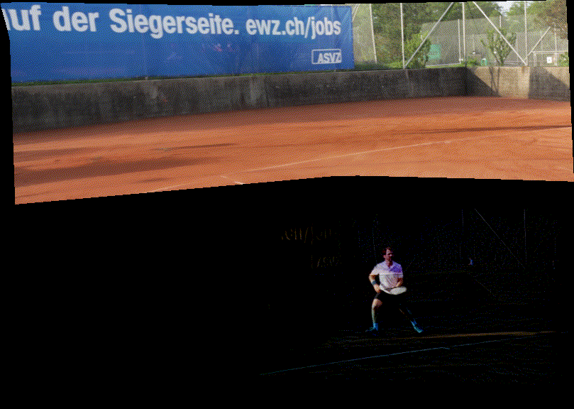

PUBLICATION
Chen Gao, Yipeng Wang, Changil Kim, Jia-Bin Huang, Johannes Kopf
SIGGRAPH Asia 2024 (Conference track)
Meng-Li Shih, Jia-Bin Huang, Changil Kim, Rajvi Shah, Johannes Kopf, Chen Gao
SIGGRAPH 2024 (Conference track)
[Paper (PDF)] [Project page] [Code]

Li Ma, Vasu Agrawal, Haithem Turki, Changil Kim, Chen Gao, Pedro V. Sander, Michael Zollhöfer, Christian Richardt
Proceedings of IEEE Conference on Computer Vision and Pattern Recognition (CVPR) 2024
[Paper (PDF)] [Project page]
Geng Lin, Chen Gao, Jia-Bin Huang, Changil Kim, Yipeng Wang, Matthias Zwicker, and Ayush Saraf
Proceedings of International Conference on Computer Vision (ICCV) 2023
[Paper (PDF)] [Project page] [Code]
Andreas Meuleman, Yu-Lun Liu, Chen Gao, Jia-Bin Huang, Changil Kim, Min H. Kim, Johannes Kopf
Proceedings of IEEE Conference on Computer Vision and Pattern Recognition (CVPR) 2023
[Paper (PDF)] [Project page] [Code]
Yu-Lun Liu, Chen Gao, Andreas Meuleman, Hung-Yu Tseng, Ayush Saraf, Changil Kim, Yung-Yu Chuang, Johannes Kopf, Jia-Bin Huang
Proceedings of IEEE Conference on Computer Vision and Pattern Recognition (CVPR) 2023
[Paper (PDF)] [Project page] [Code]
Chen Gao, Ayush Saraf, Johannes Kopf, Jia-Bin Huang
Proceedings of IEEE International Conference on Computer Vision (ICCV) 2021
[Paper (PDF)] [Project page] [Code]
Chen Gao, Yichang Shih, Wei-Sheng Lai, Chia-Kai Liang, Jia-Bin Huang
arXiv preprint
[Paper (PDF)] [Project page]
Chen Gao, Ayush Saraf, Jia-Bin Huang, Johannes Kopf
Proceedings of European Conference on Computer Vision (ECCV) 2020
[Paper (PDF)] [Project page] [Code] [Google Colab]
Chen Gao, Jiarui Xu, Yuliang Zou, Jia-Bin Huang
Proceedings of European Conference on Computer Vision (ECCV) 2020
[Paper (PDF)] [Project page] [Code]

Yun-Chun Chen*, Chen Gao*, Esther Robb, Jia-Bin Huang
Proceedings of European Conference on Computer Vision (ECCV) 2020
[Paper (PDF)] [Project page] [Code]

Jinwoo Choi, Chen Gao, Joseph Messou, Jia-Bin Huang
Proceedings of Neural Information Processing Systems (NeurIPS) 2019
[Paper (PDF)] [Project page] [Code] [Poster]

Chen Gao, Yuliang Zou, Jia-Bin Huang
Proceedings of The British Machine Vision Conference (BMVC) 2018
[Paper (PDF)] [Project page] [Code] [Poster]

Chen Gao*, Brian E. Moore*, Raj Rao Nadakuditi
IEEE Transactions on Computational Imaging (TCI) 2019
[Paper (PDF)] [Project page] [Code]

Chen Gao, Brian E. Moore, Raj Rao Nadakuditi
Proceedings of IEEE Global Conference on Signal and Information Processing (GlobalSIP) 2017 (Oral)
[Paper (PDF)] [Project page] [Code] [Slides(video demo)]